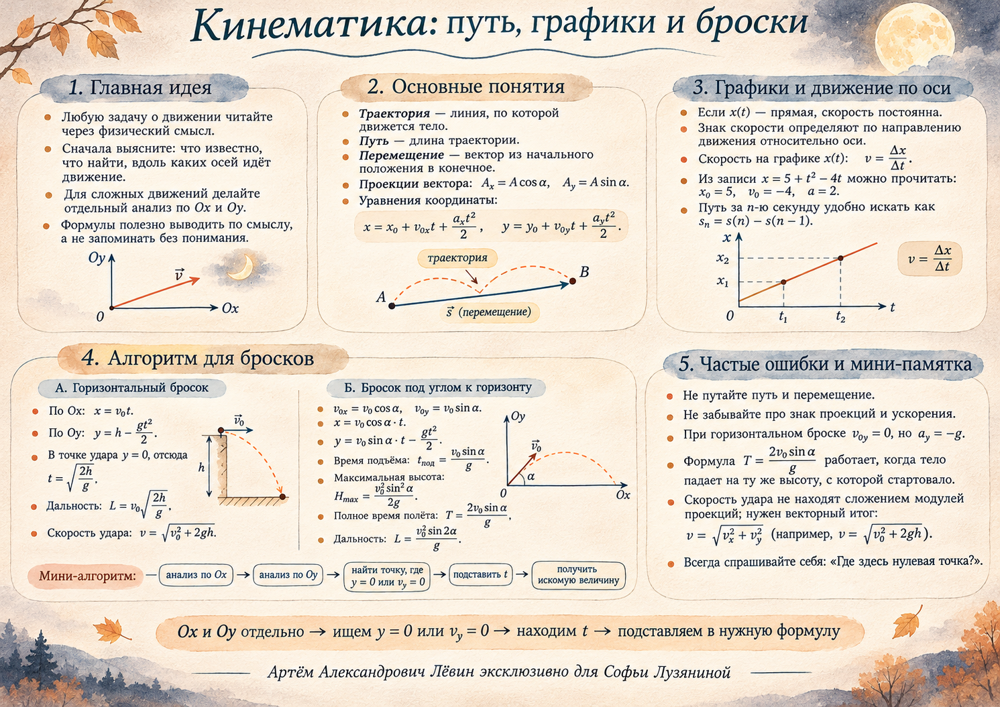

01Полуокружность
Тело проходит полуокружность радиуса . Определите путь и модуль перемещения.
Урок 01 / 16 ноября 2026 / ЕГЭ по физике
Как из одной схемы движения получить время полёта, дальность, высоту и скорость — и почему важно различать путь, перемещение и проекции.
София Лузянина · Преподаватель: Лёвин Артём Александрович
Основа
Траектория — линия движения. Путь измеряет её длину. Перемещение — направленный отрезок от начального положения до конечного.
Если пройти полуокружность радиуса R, путь составляет половину длины окружности, а модуль перемещения равен диаметру.
Язык векторов
Для вектора, составляющего угол с положительным направлением горизонтальной оси, определите составляющие через косинус и синус. Знак каждой проекции устанавливается по выбранным осям.
При движении тела в двумерном пространстве сначала запишите горизонтальную и вертикальную проекции скорости и ускорения. Это позволяет избежать смешения направлений и знаков.
Закон движения
При постоянной проекции ускорения координата — квадратный трёхчлен по времени, а скорость изменяется линейно.
Начальная координата — свободный член; начальная скорость — коэффициент при времени; ускорение равно удвоенному коэффициенту при квадрате времени.
В момент встречи координаты совпадают. Приравняйте два закона движения и проверьте положительность найденного времени.
Подстановка в любой из законов даёт координату встречи: минус одна треть метра.
Графический метод
Для прямолинейного равномерного движения проекция скорости — наклон графика координаты от времени. Выберите любые две точки и поделите изменение координаты на изменение времени.
Чтобы получить перемещение за очередную секунду, вычтите координату в начале секундного интервала из координаты в конце.
Двумерная кинематика
Выберите начало координат на земле под точкой броска, ось высоты направьте вверх. Горизонтальная скорость постоянна, вертикальная изначально равна нулю, вертикальное ускорение направлено вниз.
Проверочный пример. При высоте 20 м, горизонтальной скорости 15 м/с и ускорении свободного падения 10 м/с² получаем время 2 с, дальность 30 м и скорость удара 25 м/с.
Проверьте, как изменение высоты влияет на время и дальность →
Два этапа полёта
Разложите начальную скорость на компоненты. Подъём заканчивается, когда вертикальная скорость обращается в нуль. Полёт до прежней высоты завершается, когда координата высоты снова равна нулю.
Приравняйте вертикальную скорость к нулю, затем подставьте время подъёма в закон высоты.
В этом частном случае время падения от вершины равно времени подъёма, поэтому выполняются формулы:
Общий маршрут
Модуль результирующей скорости находится из перпендикулярных проекций по теореме Пифагора:
Путь А · 10 задач
Для задач 5–10 используйте ускорение свободного падения 10 м/с². Сопротивлением воздуха пренебрегайте. В задачах о бросках начните с уравнений по двум осям.
Тело проходит полуокружность радиуса . Определите путь и модуль перемещения.
Дано (в СИ). Найдите начальную координату, начальную проекцию скорости, ускорение и проекцию скорости через 2 с.
Тела движутся согласно и . Когда и где они встретятся?
График координаты проходит через точки «1 с, 7 м» и «5 с, −5 м». Найдите проекцию скорости, начальную координату и направление движения.
Начальная скорость 4 м/с, ускорение 2 м/с² сонаправлено скорости. Найдите путь за шестую секунду.
Мяч брошен горизонтально с высоты 20 м при скорости 15 м/с. Найдите время полёта, дальность и скорость при падении.
С высоты 45 м тело брошено горизонтально; дальность 60 м. Найдите начальную скорость и тангенс угла удара ниже горизонта.
С высоты 80 м брошен горизонтально мяч со скоростью 12 м/с. Найдите координаты через 2 с и модуль скорости; начало координат на земле под точкой броска.
С земли под углом 45° бросили тело со скоростью 20 м/с; оно приземлилось на прежний уровень. Найдите время подъёма, время полёта, высоту и дальность.
Время до вершины 2 с; горизонтальная проекция скорости 15 м/с. Тело брошено с земли под острым углом и упало на прежний уровень. Найдите начальную скорость, тангенс угла, высоту и дальность.
Сначала выполните задания самостоятельно. Развёрнутые пояснения и формулы приведены в PDF.
Самопроверка
Выберите ответ — появится объяснение, связанное с разобранным материалом.
Выберите один вариант.
Выберите один вариант.
Выберите один вариант.
Отмечено 0 из 5 умений.
Памятка
Осенняя луна — акварельная карта ключевых формул, методов и частых ошибок. Используйте как визуальную памятку после разбора.
